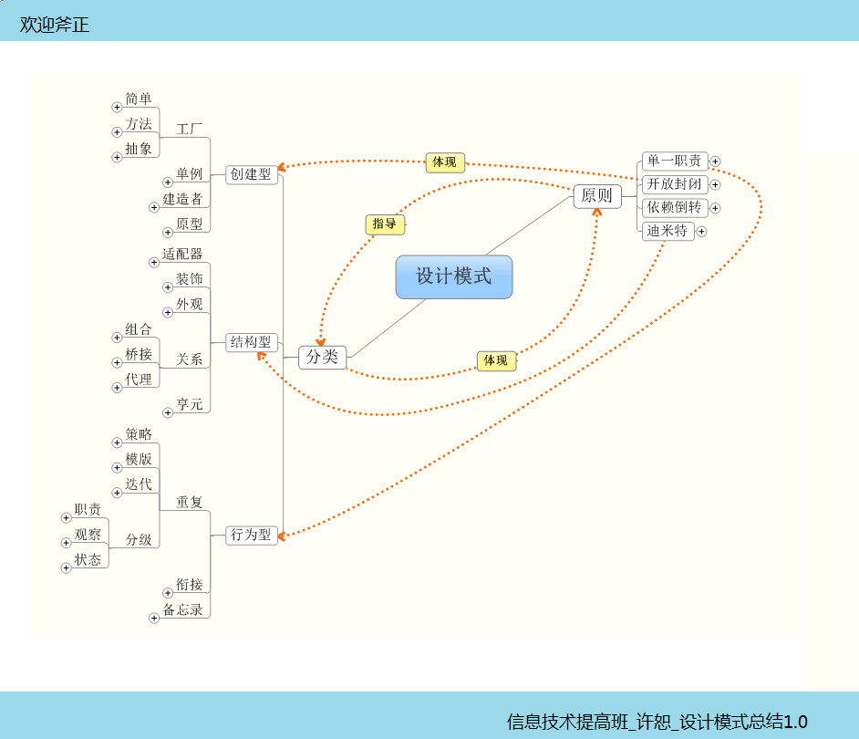

终于进行到设计模式了，面向对象的一扇大门终于撬开点缝隙！预想着面向对象的程序设计应该很容易理解，在以后的学习中应该比较顺畅。但是，事实往往事与愿违，刚开始接触面向对象那种简单，易上手的感觉一扫而光！事实是初次接触抽象的不理解，接口的迷惑，关系的混淆，最后是设计模式在脑子里混成一锅粥，稀烂稀烂的八宝粥！
比较幸运的是，老师告诉过我盲人摸象的典故，我告诉自己，这样就对了，哪有什么天才一接触这些东西就能很透彻地理解，并发散和扩展，成长需要的是适时的跌倒和爬起来的勇气，及总结经验的过程，学习设计模式也是如此，没有一蹴而就，只有循序渐进！
首先，从第一点模式开始，模式是解决一类问题的方法，将这个方法上升到一定的高度就是模式，设计模式也是模式，决定设计模式的就是两个特定的东西：环境和问题。
环境：只有有了大背景才能说这个问题怎么解决，举个例子，比如说有个养鸡场，小鸡刚刚孵化，需要注射疫苗，假定注射疫苗是一种模式，那么养鸡场这个环境不能丢，如果换个环境，这个模式不见得可以行得通，就比如说环境变成啤酒厂，难道要给新酿的酒注射疫苗吗？
所以，环境是设计模式的先决条件！

问题：有了大环境，也要碰到特定的问题才可以启用某种模式，还是养鸡场的例子，给新孵化的雏鸡注射疫苗是为了解决雏鸡抵抗力低下，易死亡的问题，换个问题，比如公鸡不打鸣，就不见得特别适合注射疫苗这个模式！
模式只有碰到特定的环境，特定的问题才能发挥它应有的作用，帮助我们解决问题，更高效地工作！
对应到设计模式，环境就是本系统，只有在本系统，遇到的问题找适合的模式才能更好地解决问题！
